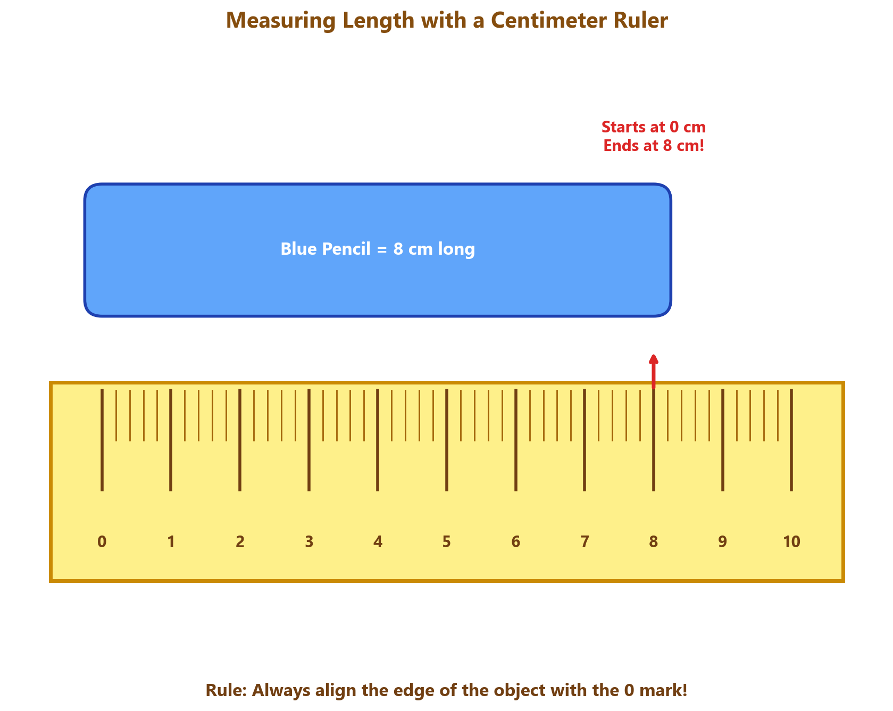

Chapter 5: Measurement & Telling Time
Centimeters (cm), Meters (m), Clocks (Hour & Half Hour)
Part 1: Concept Explanations & Visual Rules
🎈 Clock Tip: Short hand = Hours (slow). Long hand = Minutes (fast). When long hand is on 12 it's o'clock, on 6 it's half past (:30)!
1. Length (Centimeters vs Meters)
• Centimeter (cm): Used for small objects (pencil, book, spoon).
• Meter (m): Used for large objects (door, car, classroom).
• Key conversion: 1 meter = 100 centimeters (1 m = 100 cm).
2. Telling Time (Analog & Digital)
• O'clock: Long hand on 12 (e.g. short on 4 = 4:00).
• Half past: Long hand on 6 (e.g. short between 4 and 5 = 4:30).

⏰ Figure (1): Telling Time • Analog & Digital Clocks: Reading O'clock (3:00) and Half Past (7:30) (قراءة الساعة التناظرية والرقمية تماماً ونصف).

📏 Figure (2): Measuring Length with a Centimeter Ruler • Always aligning with the 0 mark (قياس الأطوال بالمسطرة بالسنتيمتر).
Part 2: Fun Practice & Exam Questions
Q1: Which unit is best to measure the length of a classroom door?
Centimeters (cm)
Meters (m)
Grams (g)
Liters (L)
Q2: When the short hand is between 2 and 3, and the long hand points to 6, what time is it?
2:00
2:30
3:00
6:15
Part 3: Model Answers & Solutions
✅ Answer Key:
- Q1: Meters (m) (doors are tall, ~2 meters).
- Q2: 2:30 (half past 2).